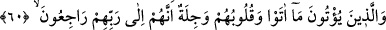
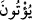
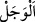
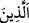

Bu yüzden ortak koşmamak âyetlere îmandan sonraya bırakılmıştır.
Cüneyd (k.s.) der ki: “Sırrını kontrol edip orada Rabbinden daha büyük ve yüce bir
şey gören kimse şüphesiz Allah’a şirk koşmuş ve o şeyi O’na denk tutmuştur.”
et-Te’vilâtü’n-Necmiyye’de şöyle der: Şirkin en büyüklerinden birisi de halkın red ve
kabûlünü dikkate almaktır. Bu, onların övmesiyle sevinmek ve yermesiyle gücenip
kırılmaktır. Sebepleri düşünüp dikkate almak da böyledir. Şifânın ilaç içmekten ve
doymanın yemek yemekten hâsıl olduğu vehmine kapılmak gerekmez. Yakin geldiği
zaman vehimler, yâni meydana gelen şeylerin hâdis varlıklardan olduğunu vehmetme
ortadan kalkar. Bunun ancak takdir ile olduğu anlaşılır. İşte o zaman şirkten sakınılmış
olur.
Câmî (k.s.) der ki:
Has olan cep, içinde ihlâs hazinesini bulundurur
Bu kıymetli inci her haramzâdenin koltuğu altında bulunmaz
60. Ve Rablerine dönecekleri için yapmakta oldukları işleri kalpleri çarparak
yapanlar;
“Ve Rablerine dönecekleri için” yâni sâdece Allah’a dönecekleri için değil
yaptıklarının kendilerinden kabul edilmeyeceği, lâyıkı vechile olmayacağı ve o zaman
bundan dolayı kınanacakları korkusuyla “yapmakta oldukları işleri” yâni verdikleri
zekât ve sadakaları “kalpleri” çok şiddetli bir korkuyla korkmuş olarak “çarparak
yapanlar;” yaptıkları hayırları ve iyilikleri Allah’a ulaşmaya vesile/vâsıta edinenler.
Muzâri sıygası (
) devamlılığa ve mâzî (
) ise kesin olarak gerçekleşmeye delâlet
etmek içindir.
Râğıb: “
” korkuyu hissetmek demektir.
57-60. âyetlerde yer alan sıfatları taşıyan kimseler, bir tek guruptan ibârettir. Yoksa
her gruptan biri, zikredilen vasıflardan birine sâhip değildir. Sanki şöyle buyrulmuştur:
“Rablerine olan saygıdan dolayı kötülükten sakınan, Rablerinin âyetlerine inanan,
Rablerine ortak tanımayan ve Rablerine dönecekleri için yapmakta oldukları işleri
kalpleri çarparak yapanlar”
Mevsûllerin (
) tekrar edilmesi, bu sıfatlardan her birinin karşısındakine göre açık
bir fazîlet ile ayrıldığını bildirmek ve bu sıfatın müstakilliğini onunla vasfedilenin
müstakilliği yerine koymak içindir.
Büyüklerden birisi der ki: Ârifin tâatinden dolayı duyduğu korku, muhâlefetten/karşı
gelmesinden dolayı duyduğu korkudan daha çoktur. Çünkü, muhâlefet, tevbe ile yok olur.
Tâat ise içinde ihlâs ve sıdk/samimiyet olduğu halde düzeltilmeyi gerektirir. Tâatleri